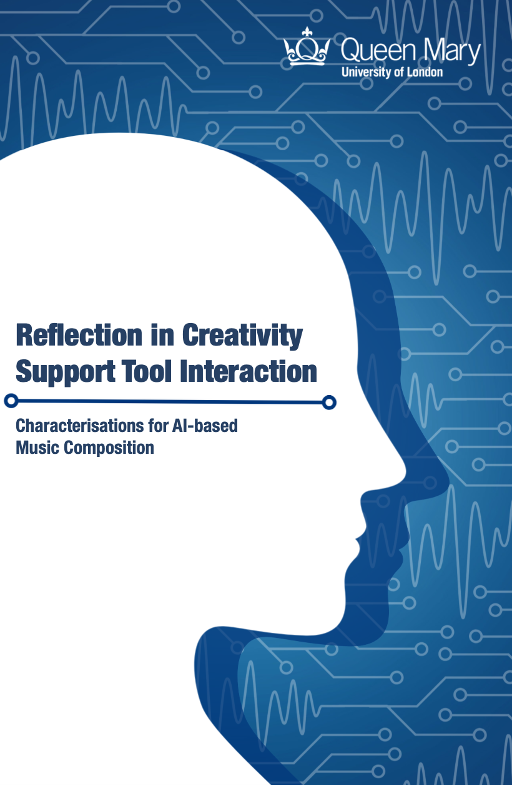

Corey Ford
PhD QMUL, BSc(Hons) MRes UWE, PGCert UAL, AFHEA

Corey Ford is a Lecturer in Computer & Data Science at the Creative Computing Institute, University of the Arts London.
Ford's research interests lie in examining how different aspects of the user experience (such as reflection or engagment) happen in different creative domains (such as music) and technologies (such as AI). They have published in venues such as ACM CHI, ACM C&C, and ACM Computing Surveys. They completed their HCI Ph.D. from Queen Mary University of London on characterising reflection in music interaction.
They are also the Early Career Advocate for the Computer Arts Society. They are a Distinguished Reviewer for ACM TOCHI. They also chair the Reflection in Creative Experience Workshop.
Areas: Creativity Support Tools, Reflection, Computer Arts, Human-Computer Interaction, User Experience Design, Interaction Design, Music Composition, Generative Music, AI, Machine Learning
projects
 UX Questionnaire for Reflection in Creative Contexts
UX Questionnaire for Reflection in Creative Contexts

Read My PhD Thesis on Reflection & AI Music CFP: Workshop on Reflection in Creative Experiences
CFP: Workshop on Reflection in Creative Experiences
 I was nominated by the students union for a teaching award!!!
I was nominated by the students union for a teaching award!!!
 Won an Honourable Mention award at ACM C&C 2024!
Won an Honourable Mention award at ACM C&C 2024!